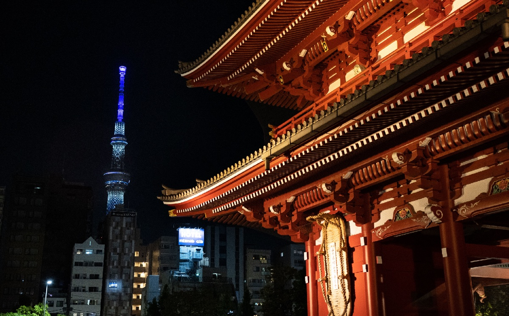
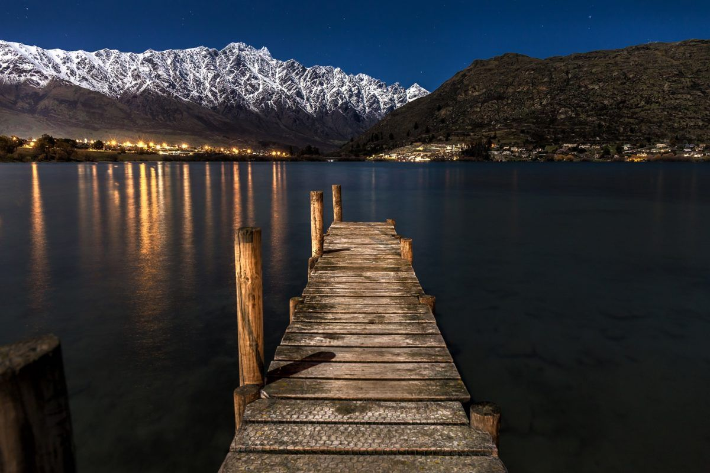
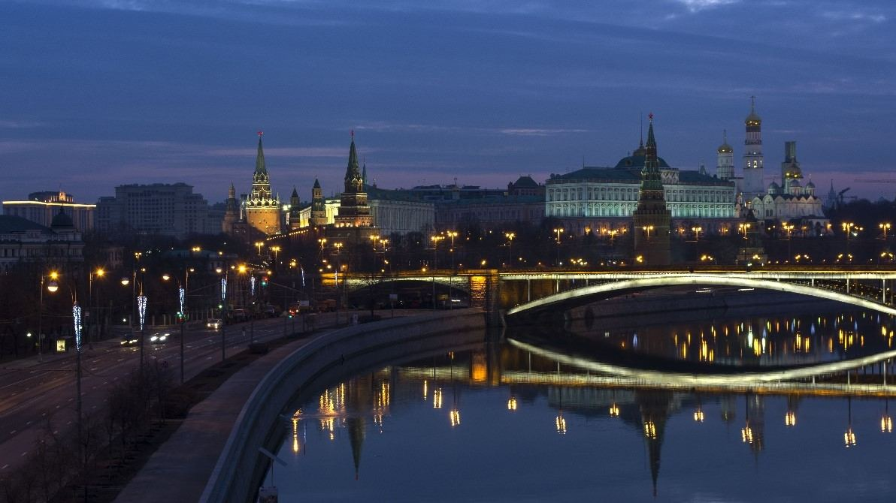

Tokio, la ajetreada capital de Japón, mezcla lo ultramoderno y lo tradicional, desde los rascacielos iluminados con neones hasta los templos históricos. El opulento santuario Shinto Meiji es conocido por su puerta altísima y los bosques circundantes. El Palacio Imperial se ubica en medio de grandes jardines públicos. Los distintos museos de la ciudad ofrecen exhibiciones que van desde el arte clásico (en el Museo Nacional de Tokio) hasta un teatro kabuki reconstruido (en el Museo Edo-Tokyo).

Nueva Zelanda es un país en el suroeste del océano Pacífico, que comprende dos islas principales, ambas marcadas por los volcanes y la glaciación. En la capital, Wellington, en la Isla Norte, se encuentra el extenso museo nacional Te Papa Tongarewa. El impresionante monte Victoria de Wellington, junto con Fiordland y Southern Lakes en la Isla Sur, representaron la mítica Tierra Media en la saga "El Señor de los Anillos" de Peter Jackson.

Rusia es el país más grande del mundo con un territorio de más de 17millones de kilómetros cuadrados. Está sitiuada en el este de Europa y en el norte de Asia, tiene fronteras con 16 estados y su línea fronteriza es la más larga del mundo con 60 mil kilómetros de extensión. Rusia posee la cuarta parte de todos los bosques del mundo, más que cualquier otro país. La zona continua de los bosques se extiende desde las fronteras occidentales del país hasta la costa del Océano Pacífico.